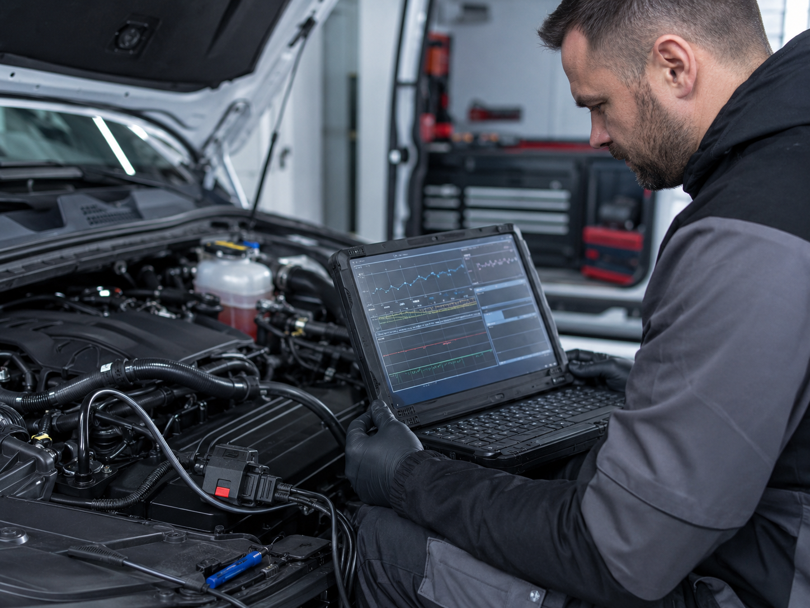
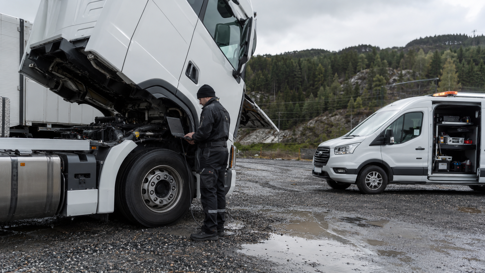
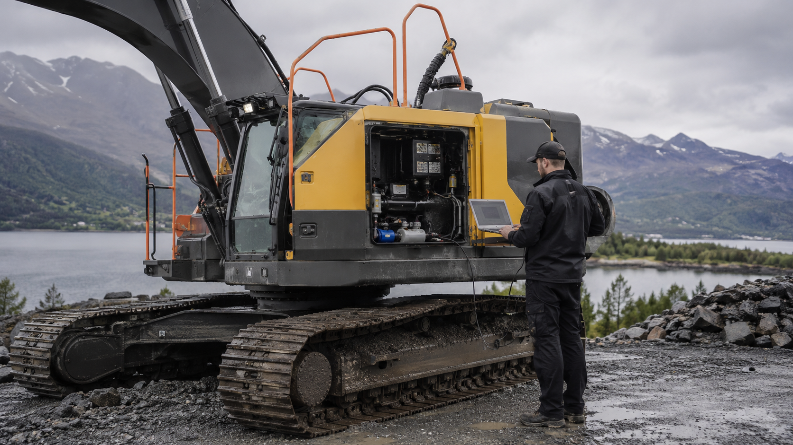
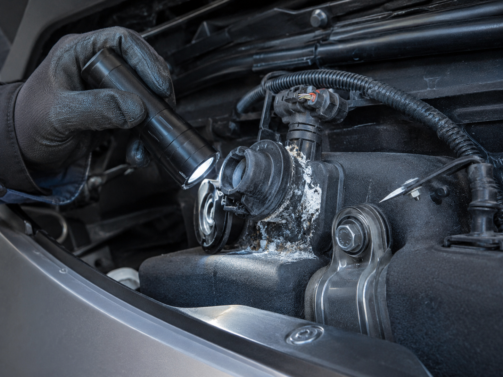
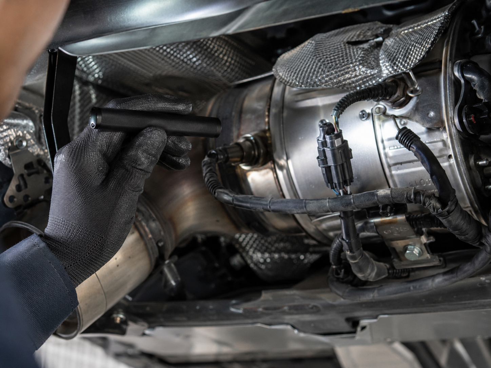

AdBlue‑problem? Vi finn årsaka før du byter dyre delar.
Feilkode på AdBlue, SCR eller NOx‑system kan raskt føre til motorlampe, redusert effekt, startsperre eller nedtelling til at bilen ikkje startar.
Hos AdBluehjelp.no får du fagleg diagnose og praktisk feilsøking på moderne dieselkøyretøy — anten det gjeld personbil, varebil, bobil, lastebil, traktor, anleggsmaskin eller anna utstyr med moderne dieselteknologi.
Mål først. Skru etterpå.
Vestlandet · Mobil diagnose · Bil · Bobil · Varebil · Lastebil · Traktor · Maskin
Når AdBlue‑systemet kranglar, blir det fort dyrt
AdBlue‑systemet er ein viktig del av SCR‑rensinga på moderne dieselmotorar. Når systemet fungerer, bidreg det til å redusere NOx‑utslepp ved hjelp av AdBlue‑væske og ein SCR‑katalysator.
Når systemet ikkje fungerer, kan bilen eller maskina reagere ganske brutalt:
- Motorlampe
- AdBlue‑varsel
- Feilkode på NOx‑sensor
- Redusert motoreffekt
- Nødmodus
- Høgt AdBlue‑forbruk
- Krystallisering eller lekkasje
- Start ikkje mogleg etter nedtelling
- Gjentakande feilkodar etter sletting
Problemet er at sjølve feilkoden ikkje alltid peikar direkte på den defekte delen.
Ein NOx‑feilkode betyr ikkje automatisk at NOx‑sensoren er
øydelagd.
Ein AdBlue‑feil betyr ikkje automatisk at tanken må bytast.
Og ein sletta feilkode er ikkje det same som ei reparert årsak.
Typiske AdBlue‑feil vi hjelper med
AdBlue / SCR‑system
- AdBlue‑varsel i dashbord
- Nedtelling til startsperre
- “No start in X km”
- Feil på SCR‑effektivitet
- Feil på AdBlue‑dosering
- Feil på AdBlue‑kvalitet
- Feil på trykk i AdBlue‑system
- Feil på temperatur eller varmeelement
- Feil på pumpe, tank eller dyse
- Krystallisering i dyse, slange eller rør
- Lekkasje eller tett doseringssystem
NOx og sensorar
- NOx‑sensor før eller etter SCR‑katalysator
- Urimelege måleverdiar
- Kommunikasjonsfeil
- Sensorfeil som kjem tilbake
- Feil som påverkar regenerering eller motorgange
- Feil på ledningsnett eller kontaktpunkt
Drift og følgjefeil
- Motorlampe
- Nødmodus
- Redusert effekt
- Høgt forbruk
- Gjentakande feilkodar
- Feil etter reparasjon
- System som ikkje vil resette seg etter delen er bytt
Feilkoden er starten på feilsøkinga — ikkje fasiten
Mange AdBlue‑problem blir dyre fordi ein startar i feil ende.
Ein feilkode kan vere eit symptom på:
- Defekt sensor
- Dårleg kontakt
- Brot i ledningsnett
- Låg spenning
- Tett AdBlue‑dyse
- Krystallisert AdBlue
- Feil væskekvalitet
- Defekt pumpe
- Defekt varmeelement
- Intern feil i tankmodul
- Eksoslekkasje
- Feil temperaturdata
- Programvare‑ eller adaptasjonsproblem
- Følgjefeil frå EGR, DPF eller motorstyring
Difor startar vi med diagnose, måleverdiar og systemforståing.
Det handlar ikkje om å slette feilkodar og håpe på det beste. Det handlar om å finne årsaka.
Slik jobbar vi
Vi les feilkodar og systemdata
Vi sjekkar ikkje berre feilkodane, men ser på relevante måleverdiar, statusar og historikk.
Vi vurderer sannsynleg årsak
AdBlue‑system er ofte samansett. Ein feil kan ligge i sensor, tank, pumpe, dyse, ledningsnett, eksos, programvare eller sjølve SCR‑systemet.
Vi testar før vi konkluderer
Der det er mogleg kontrollerer vi trykk, dosering, temperatur, sensorverdiar, spenning, kommunikasjon og fysisk tilstand.
Vi gir deg eit ryddig svar
Du får ei praktisk vurdering av kva som bør gjerast vidare — utan unødvendig delar‑byting på mistanke.
Vi hjelper med reset og adaptasjon etter reparasjon
Mange system krev korrekt prosedyre etter bytte av komponentar. Feil reparasjon utan rett reset kan gjere at problemet kjem rett tilbake.

For privatkundar og bedrifter
Vi hjelper både private og næringskundar med AdBlue‑ og SCR‑problem.
Privat
- Personbil
- Varebil
- Bobil
- Pickup
- Dieselbil med AdBlue‑varsel
Bedrift
- Lastebil
- Anleggsmaskin
- Hjullastar
- Gravemaskin
- Dumper
- Traktor
- Landbruksmaskin
- Servicebil og varebil
- Maskinpark med driftsstans
Når ei maskin står stille, kostar det pengar. Då er det viktig å finne feilen raskt — men også riktig.
AdBlue‑hjelp for transport, anlegg og landbruk
Moderne dieselmaskiner er effektive, men utsleppssystema kan stoppe drifta når noko ikkje stemmer. Feil på AdBlue, SCR eller NOx‑system kan føre til redusert effekt, nødmodus og unødvendig nedetid.
Vi hjelper med praktisk diagnose og feilsøking direkte der utstyret står, slik at du får betre grunnlag før delar blir bestilt eller maskina blir sendt vidare.



AdBlue‑krystallisering
Krystallisert AdBlue, lekkasje eller tett doseringssystem er ein vanleg årsak til feilmeldingar. Vi finn ut kva som er rett diagnose før du byter tank eller pumpe.

NOx‑sensorar og eksosanlegg
Feil på NOx‑sensorar, ledningsnett eller eksoskanalar gir ofte feilkodar. Vi analyserer sensordata og kontrollerer den fysiske tilstanden på anlegget.
Lovleg, ryddig og fagleg
AdBlue/SCR er ein del av køyretøyet sitt utsleppssystem. Vi hjelper med diagnose, feilsøking, kontroll, reparasjonsgrunnlag og lovlege løysingar.
Målet er å få systemet til å fungere slik det skal — ikkje å skjule feil eller omgå utsleppssystem på køyretøy som skal brukast på offentleg veg.
Det gir tryggare drift, betre dokumentasjon og mindre risiko ved EU‑kontroll, vegkontroll eller vidare bruk.
Vanlege spørsmål
Kva betyr AdBlue‑varsel?
Det betyr at bilen eller maskina har registrert eit problem i AdBlue-/SCR‑systemet. Det kan vere alt frå låg væske eller feil væskekvalitet til sensorfeil, pumpefeil, doseringsfeil eller problem med SCR‑katalysatoren.
Kan eg berre fylle AdBlue og køyre vidare?
Av og til, ja. Men dersom varselet kjem tilbake, eller bilen tel ned til startsperre, bør systemet diagnostiserast. Då er det ofte ein konkret feil som må rettast.
Kvifor kjem feilen tilbake etter sletting?
Fordi feilkodesletting ikkje reparerer årsaka. Dersom systemet framleis måler feil verdiar, feil trykk, feil dosering eller manglande kommunikasjon, vil feilkoden kome tilbake.
Må AdBlue‑tanken bytast?
Ikkje nødvendigvis. På nokre bilar er tankmodulen ein kjend feilkilde, men det bør ikkje vere første konklusjon utan diagnose. Feilen kan også ligge i sensor, dyse, pumpe, varmeelement, ledningsnett eller andre delar av systemet.
Kan de hjelpe med maskiner og lastebil?
Ja. AdBlue‑problem finst på både lette og tunge dieselkøyretøy. Vi kan hjelpe med vurdering, diagnose og feilsøking på fleire typar køyretøy og maskiner.
Er AdBlue‑fjerning ei løysing?
For køyretøy som skal brukast på offentleg veg, er utsleppssystem ein del av typegodkjenninga. Vi tilbyr derfor ikkje marknadsføring av ulovleg fjerning eller omgåing av utsleppssystem. Vi fokuserer på diagnose, feilretting og lovlege løysingar.
Har du AdBlue‑varsel no?
Send oss gjerne:
- Registreringsnummer
- Bil, maskinmodell og årsmodell
- Bilete av feilmelding
- Eventuelle feilkodar
- Kva som allereie er forsøkt
- Kvar køyretøyet står
Då kan vi raskare vurdere kva som er mest fornuftig neste steg.